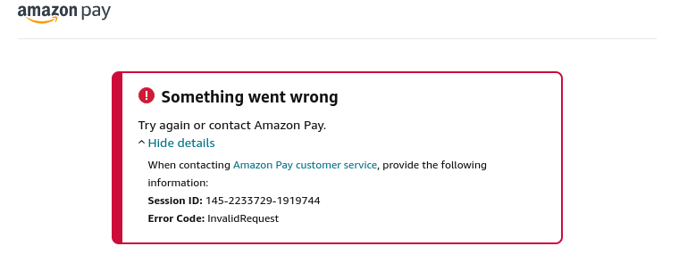
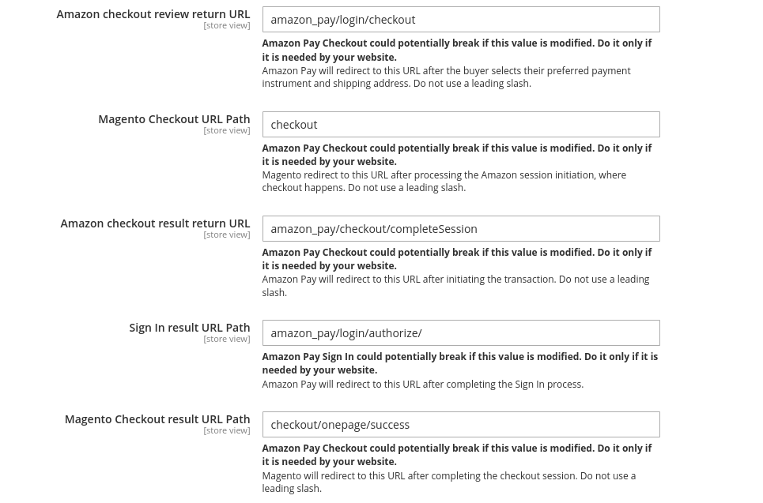
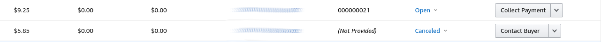

Frequently Asked Questions (FAQ)¶
Note
In order to provide the smoothest merchant/buyer experience possible, always ensure that you are running the latest version of the Amazon Pay for Magento 2 Module.
The Amazon Pay buttons are not displaying correctly¶
If you are experiencing problems with button rendering, check your credentials first in the module configuration. Ensure that you are entering settings in the correct site/store scope, and that values aren't being accidentally inherited by checking the 'Use default' or 'Use website' checkboxes for a configuration field. Some invalid credential values won't allow the module configuration to be saved, but it is possible to save the merchant ID incorrectly or select the wrong environment value (Sandbox or Live). In this case, the button may be grayed out or disabled, not render at all, or redirect to Amazon with an error message:
If your configuration values are correct and the button is still not rendering properly, there may be a conflict with a custom theme being used in the store. If the theme doesn't extend from the standard Magento Luma or blank theme, it's possible some layout elements have been moved/removed that the module relies on to load javascript or display the button.
The Amazon Pay button is not redirecting to my checkout page¶
This may happen if your store uses a one-step checkout extension. Some OSC modules define custom paths for their checkout page, and Amazon Pay needs to know where the checkout page is located in order to pass along checkout session information. You can set the value for Magento Checkout URL Path in the module configuration under Advanced > Developer Options to be the URL of your checkout page. If your store isn't using an OSC module and you need to reset redirect values to default, you can find them below:
Why are there some transactions in Seller Central with no associated order in Magento?¶
Info
This only applies to versions of the module < 5.17.0.
There are distinct processes happening between Magento and Amazon Pay when a customer places an order. Occasionally, something exceptional may happen in the Magento system when attempting to create an order that will prevent it from being placed, whether it's some type of unusual customer behavior or general server error. This type of failure is unrelated to Amazon's processing, and in this case, Amazon will process the authorization as usual. However, the authorization will be automatically canceled in Seller Central after 7 days of inactivity. This shouldn't be of major concern if there is no further action taken on the transaction. The customer should be able to try the order again, either with Amazon Pay or another payment method. If you see a transaction in Seller Central that lists (Not Provided) as the Seller Order ID, this is a good indication the customer was unable to successfully place the order in Magento (see below).
If you notice this happening somewhat often in your store, it may help to use a combination of Charge on Shipment for Payment Action and Automatic Authorization Mode. See the Configuration section for more details on payment options. You may also want to ensure that any other third-party plugins/extensions you may have installed are not prohibiting Amazon Pay as a payment method, or otherwise modifying quote data during the order placement process.
Why do we consistently see some canceled Magento orders paid with Amazon Pay?¶
Info
This only applies to versions of the module ≥ 5.17.0.
As of version 5.17.0, the Amazon Pay module has reversed the order of transaction processing in the Amazon Pay system and the order submission in Magento. Previously, the transaction was processed through Amazon (authorization/capture initiated) before placing the Magento order, but in the case there was a network failure or general problem preventing the order from being placed successfully, this could lead to “dangling” transactions in Seller Central with no associated Magento orders. These were difficult or impossible for the module to cancel or otherwise flag, leading to merchant confusion. Now, the module places the Magento order first, and can easily cancel the order if something goes wrong with the Amazon transaction. This logic reversal may lead to an increase in benign canceled orders in Magento, but should drastically reduce the frequency of orphaned transactions in Seller Central.
Amazon Pay transaction IDs used to contain an 'A'; why do they now show a 'C'?¶
The legacy version of the Amazon Pay module used a different version of the Amazon Pay API (CV1). This version of the API expected authorization IDs for certain requests; these are the transaction IDs whose last section is prefixed with 'A'. The newer version of the API (CV2) is built on different concepts, and many requests will accept a charge ID, which has a 'C' in the displayed transaction ID in Magento. This ID can be used for both authorization and capture in CV2 of the API.
To better understand the differences between these formats, and how they are used in the 2 versions of the API, refer to the documentation on migrating from CV1 to CV2. If your store uses an ERP, or other 3rd party order processing software that depends on the CV1 transaction IDs, you can apply the translation steps in reverse to obtain the needed authorization ID (for each transaction, replace the 'C' with an 'A').
Does the Amazon Pay module create any cookies?¶
The module does create two entries in the browser's local storage during the standard Amazon Pay Express Checkout flow: amzn-checkout-session-config and amzn-checkout-session. The amazon-checkout-session-config cookie holds values needed to render the Pay and Sign In buttons, like merchant ID, public key ID, and button signatures, along with preferences like button color and language. Once a customer authenticates with Amazon, they are returned to the merchant site with a checkoutSessionId as a URL parameter, which is stored in the amazon-checkout-session cookie for subsequent calls to Amazon for address information, and to update the checkout session in Amazon with accurate charge details as the checkout progresses.